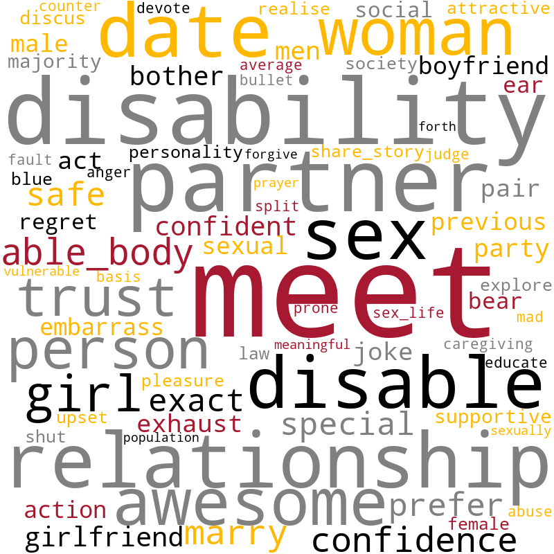

T1: Assitive Technology for Recreation and Daily Living

T2: Dating, Intimacy, and Sexuality
T3: Spasticity and Sleep Disturbance
T4: Pain and Clinical Management
T5: Eating/Drinking, Diet, Bowel Management
T6: Sexual Function and Medication Use
T7: Wheelchair Use, Transfers, and Travel
T8: Education, Employment, and Resources

T9: Hand Function and Experimental Interventions
T10: Coping and Emotional Struggle
T11: Assitive Technology for Computer/Device Use
T12: Insurance and Service Delivery
T13: Family Support, Emotional Impact, and Injury Events
T14: Bladder/Bowel Care and Complications
T15: Navigating Experimental Therapies and Clinical Trials
T16: Predicting Functional Trajectories
T17: Locomotor Function and Early-Stage Rehabilitation